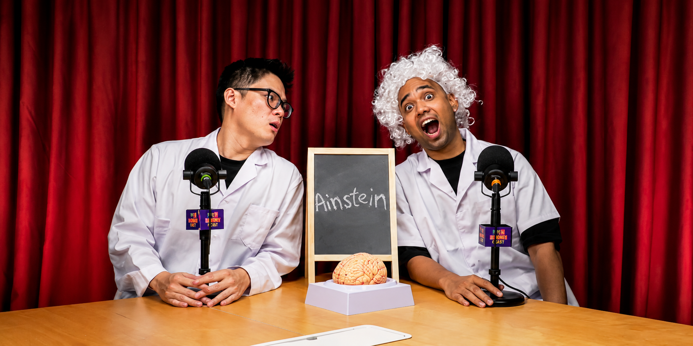
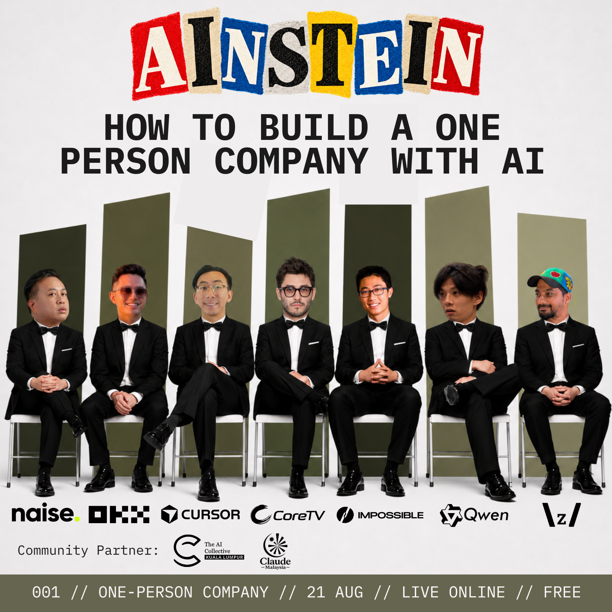
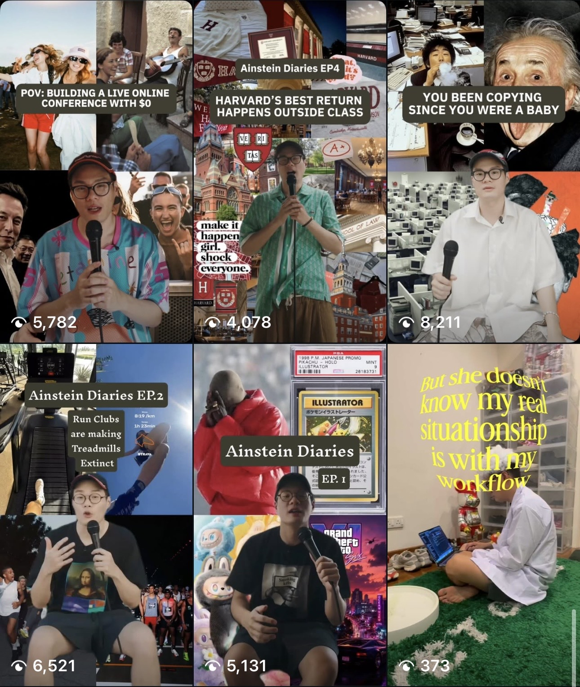
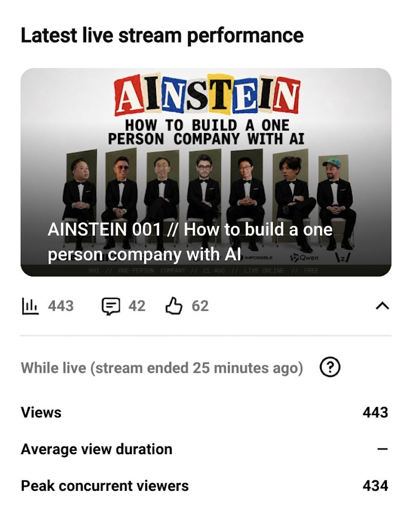
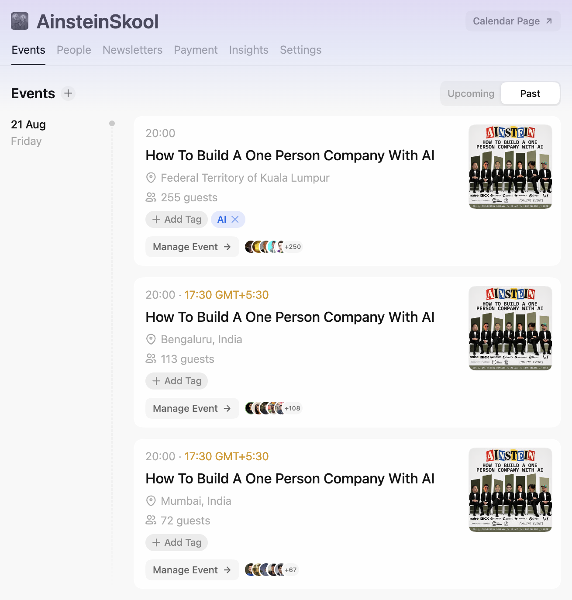
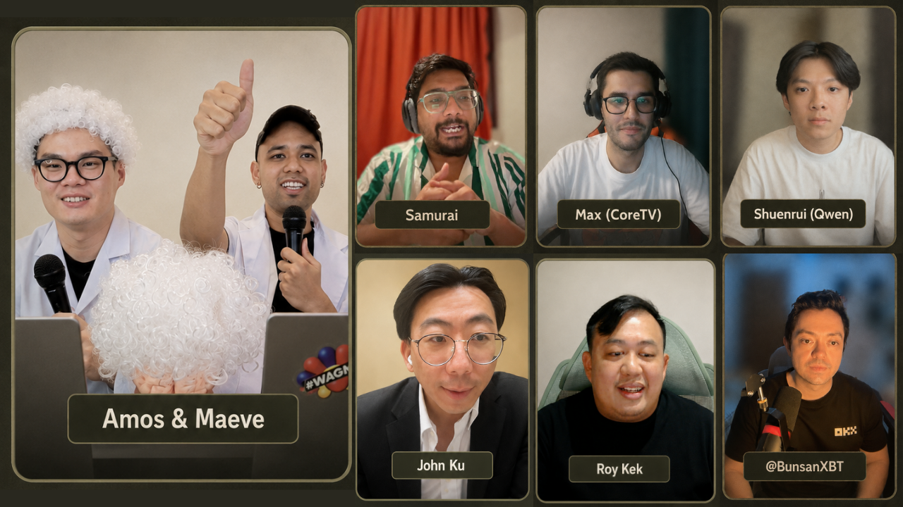
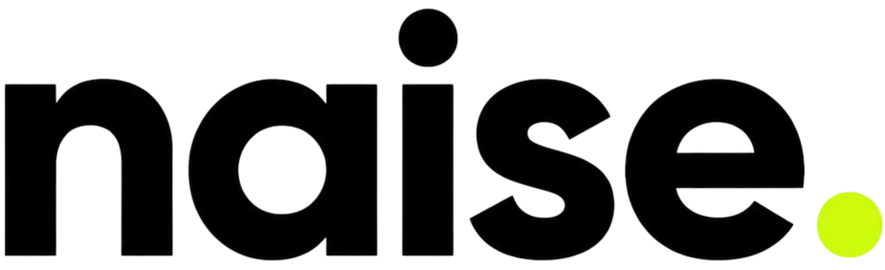
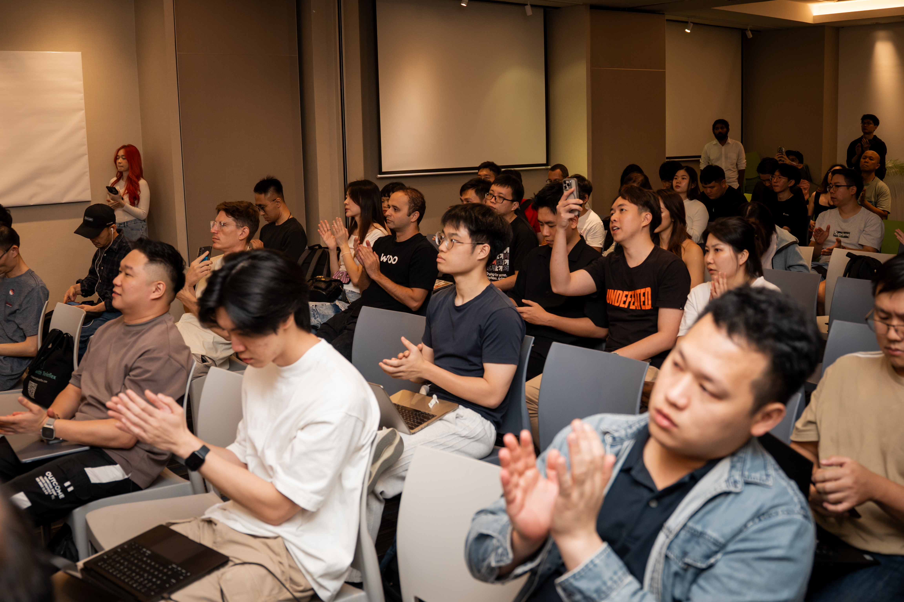

AINSTEIN // 001Case Study

The Event Became the Marketing
02The Questions
It Started With
Three
Questions
Why do you feel stuck when learning something new?
Why does learning often feel so lonely?

From those questions, we formed a thesis:
Learning should not only be useful. It should feel like an experience.
03The System
Idea → Speakers → Branding → Content → Distribution → Sign-up → Live Show → Community
A 10-day Instagram Reels series, stories and written posts across Instagram and X introduced the ideas, speakers and event identity.

YouTube and X carried the live experience, making the show accessible wherever the audience already was.

Sessions became clips, quotes, educational posts, carousels and longer-form content—an ongoing source of value.

04The Experience

Making learning feel less like a lecture and more like an experience.
Learn from the best, anywhere.
We curate top speakers and operators from around the world, bringing their knowledge directly to our community.
Anyone can tune in from anywhere, allowing AINSTEIN to scale without being limited by geography or venue size.



Learn online. Connect offline.
Across Malaysia, Hong Kong, the Philippines, and India, our satellite locations bring people together to experience AINSTEIN in person.
Members tune in together, meet like-minded people, and continue the conversation through networking sessions and community-led programs after each event.
